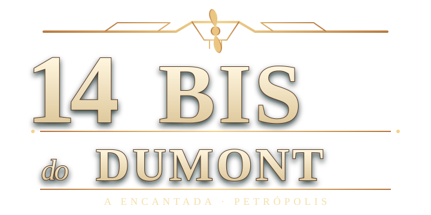

Mapa da serra · clique para fechar · o norte fica para cima · ✈ você está aqui
Selecione uma tecla para mudar o atalho. As alterações ficam salvas neste navegador. Esc fecha o menu.
UMA AVENTURA ENTRE A CASA E O CÉU
Explore A Encantada, caminhe pela serra de Petrópolis e pilote o histórico 14-bis.
Santos Dumont · A Encantada · 14-bis